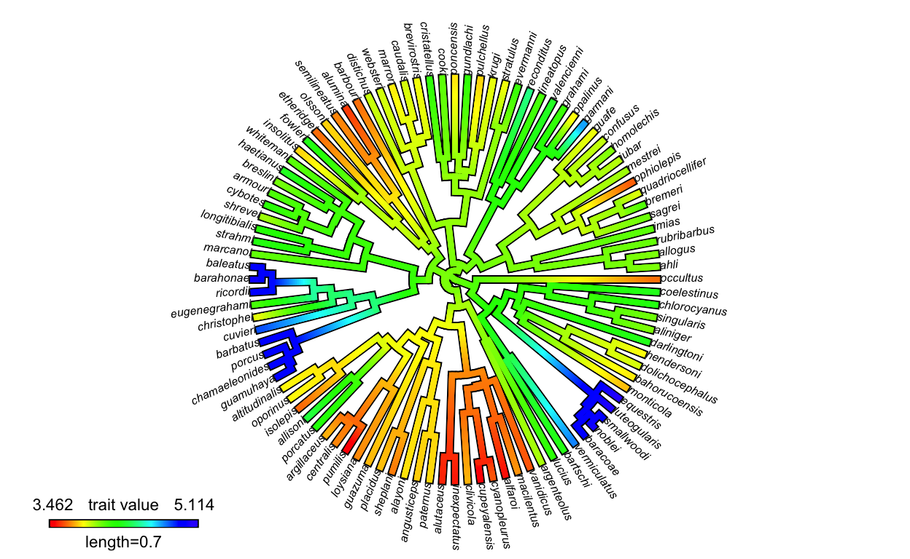
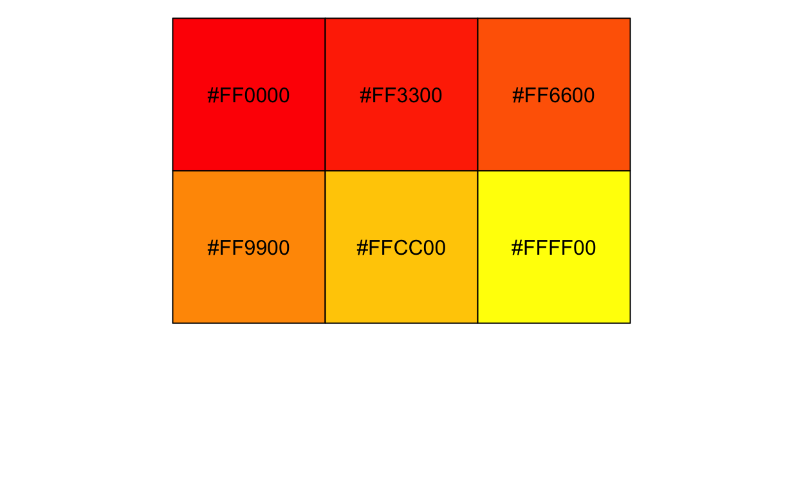
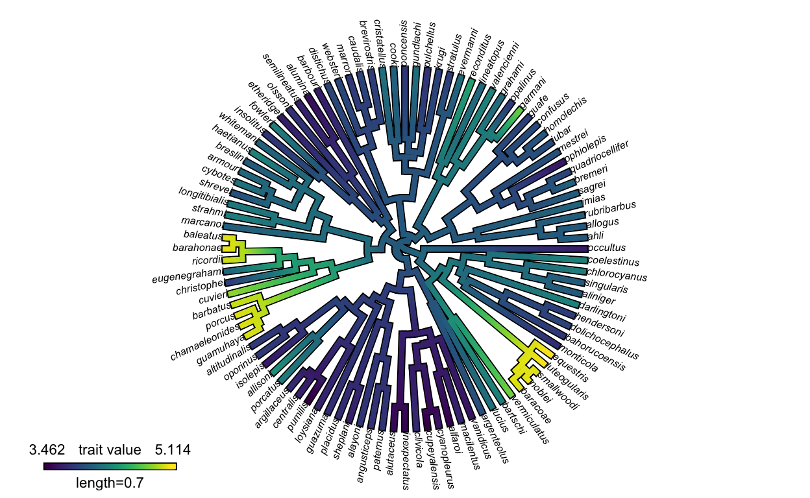
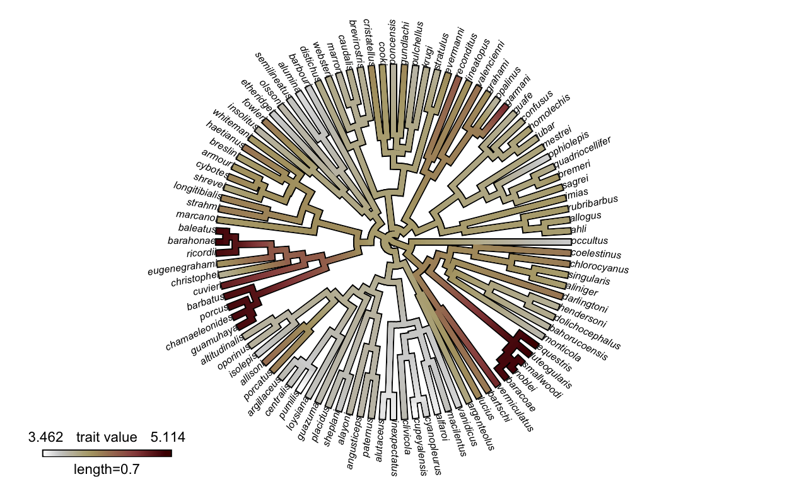
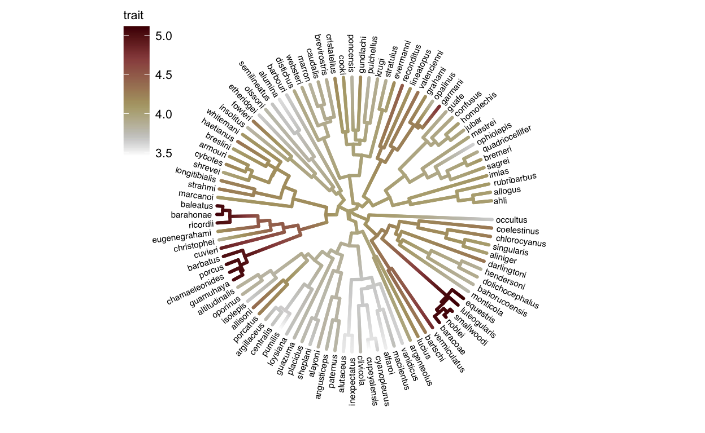

How to change the phytools default color scheme when visualizing the results of ancestral character state estimation
The phytools package provides (among many other things) the contMap() function for estimating ancestral character states and visualizing their changes along the branches of a phylogenetic tree. It can either produce the plot directly (default), or be saved as an object with the plot = FALSE argument, to be further manipulated and plotted later with plot().
I have to say I’m not a fan of the default color scheme, which is a rainbow palette going from red through yellow and green to blue.
For example, let’s borrow some example code and look at the default plot:
# code modified slightly from http://www.phytools.org/eqg2015/asr.html
## Load needed packages for this blogpost
library(phytools)
library(ggtree)
library(tidyverse)
library(scico)
library(viridisLite)
## Load anole tree
anole.tree <- read.tree("http://www.phytools.org/eqg2015/data/anole.tre")
## Load anole trait data, extract snout-vent-length (svl) as named vector
svl <- read_csv("http://www.phytools.org/eqg2015/data/svl.csv") %>%
mutate(svl = set_names(svl, species)) %>%
pull(svl)
# Plot with default color scheme
contmap_obj <- contMap(anole.tree, svl, plot = FALSE)
plot(
contmap_obj,
type="fan",
legend = 0.7*max(nodeHeights(anole.tree)),
fsize = c(0.5, 0.7))

Although this does provide a wide range of colors, it’s not obvious why one color is greater or less than the others. In particular it’s hard to discern the order of intermediate values (yellow, green, light blue). Indeed, there has been much written on why the rainbow palette is generally not a good way to visualize continuous data.
phytools::setMap() can be used to specify another color palette. setMap() passes its second argument (a vector of color names or hexadecimals) to colorRampPalette(). colorRampPalette() is a bit unusual in that it’s a function that produces a function, in this case, one that generates a vector of colors interpolating between the original input values:
# colorRampPalette() produces a function
my_color_func <- colorRampPalette(c("red", "yellow"))
class(my_color_func)
[1] "function"# The function generates n colors interpolating between
# the colors originally passed to colorRampPalette()
my_colors <- my_color_func(n = 6)
scales::show_col(my_colors)

So, this works fine for generating custom color gradients. But designing accurate, color-blind friendly color palettes is not a simple task. Fortunately, there are several packages available with such carefully crafted palettes. Two of my favorite are viridis and scico. How can we use these with the plotting function in phytools?
viridis or scico palettesWell, it turns out that as long as we specify the same number of colors, we can replicate the viridis color palette with colorRampPalette(). The only difference is the alpha, or transparency level, indicated at the end of each hexidecimal with two letters (here “FF”). There is no reason to use transparency here anyways, so that doesn’t matter.
# viridis color palette with 6 colors
viridis(6)
[1] "#440154FF" "#414487FF" "#2A788EFF" "#22A884FF" "#7AD151FF"
[6] "#FDE725FF"# colorRampPalette() replicating viridis color palette
colorRampPalette(viridis(6))(6)
[1] "#440154" "#414487" "#2A788E" "#22A884" "#7AD151" "#FDE725"So here is the viridis version of the phytools plot:
# Count the number of unique character states in the observed data:
n_cols <- n_distinct(svl)
# Change the color palette
contmap_obj_viridis <- setMap(contmap_obj, viridis(n_cols))
# Plot the mapped characters with the new colors
plot(
contmap_obj_viridis,
type="fan",
legend = 0.7*max(nodeHeights(anole.tree)),
fsize = c(0.5, 0.7))

And here is another one, this time using a palette from scico:
# Change the color palette
contmap_obj_scico <- setMap(contmap_obj, scico(n_cols, palette = "bilbao"))
# Plot the mapped characters with the new colors
plot(
contmap_obj_scico,
type="fan",
legend = 0.7*max(nodeHeights(anole.tree)),
fsize = c(0.5, 0.7))

I personally find this one even easier to interpret than viridis. It’s very clear which values are low and high.
ggtreeJust for completeness, here is code to replicate the plot in ggtree.
# Modified from https://yulab-smu.top/treedata-book/chapter4.html#color-tree
# Fit an ancestral state character reconstruction
fit <- phytools::fastAnc(anole.tree, svl, vars = TRUE, CI = TRUE)
# Make a dataframe with trait values at the tips
td <- data.frame(
node = nodeid(anole.tree, names(svl)),
trait = svl)
# Make a dataframe with estimated trait values at the nodes
nd <- data.frame(node = names(fit$ace), trait = fit$ace)
# Combine these with the tree data for plotting with ggtree
d <- rbind(td, nd)
d$node <- as.numeric(d$node)
tree <- full_join(anole.tree, d, by = 'node')
ggtree(
tree,
aes(color = trait),
layout = 'circular',
ladderize = FALSE, continuous = "color", size = 1) +
# >>> The important part! <<<
# Choose your favorite scale_color_* function here:
scale_color_scico(palette = "bilbao") +
geom_tiplab(hjust = -.1, size = 2, color = "black") +
xlim(0, 1.2) +
theme(
legend.position = c(0, .82),
legend.text = element_text(size = 8),
legend.title = element_text(size = 8)
)

That’s it!
If you see mistakes or want to suggest changes, please create an issue on the source repository.
Text and figures are licensed under Creative Commons Attribution CC BY 4.0. Source code is available at https://github.com/joelnitta/joelnitta-home, unless otherwise noted. The figures that have been reused from other sources don't fall under this license and can be recognized by a note in their caption: "Figure from ...".
For attribution, please cite this work as
Nitta (2021, June 2). Selecting color schemes for mapping ancestral states. Retrieved from https://joelnitta.com/color-scheme-anc-states
BibTeX citation
@misc{nitta2021selecting,
author = {Nitta, Joel},
title = {Selecting color schemes for mapping ancestral states},
url = {https://joelnitta.com/color-scheme-anc-states},
year = {2021}
}